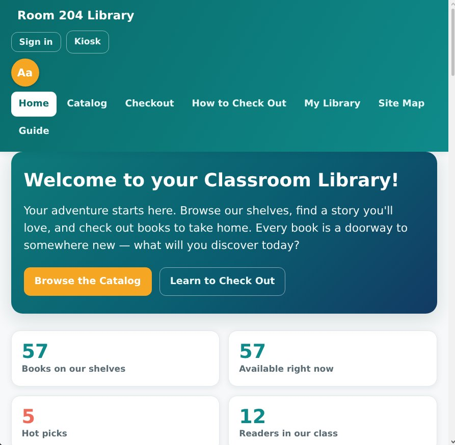

Browse a real catalog
Search and filter books by title, author, genre, type, and availability. Book details can show covers, descriptions, reviews, and ratings.
Grade 7–8 · Self-hosted · MIT
A welcoming library website for a real classroom: students browse, check out, return, renew, and hold books themselves. Teachers get the tools to manage the shelves, accounts, and reading life behind it.

A real library, scaled to a classroom
The site keeps common library tasks clear for students, while giving the teacher sensible controls for books, loans, holds, accounts, and groups.
Search and filter books by title, author, genre, type, and availability. Book details can show covers, descriptions, reviews, and ratings.
Read EAN-13 barcodes with a camera, type the number, or use a USB scanner. A walk-up kiosk supports quick check-in and checkout without a student login.
When copies are out, students join a queue and the first person gets first claim on a return. Loan lengths can vary by book type and popularity.
Students can log pages and minutes, build reading streaks, write reviews, and take part in book clubs or teacher-assigned reading groups.
Manage books, students, loans, hold queues, requests, reading groups, replacement values, and reminders from the admin console.
A small Node server provides one shared library for classroom devices. The app is responsive and installable, with a browser-local fallback for offline use.
Installation & Setup
Start it locally on your laptop, or run it on a classroom server with zero build steps or external dependencies.
1. Clone the repository
git clone https://github.com/mob5824m-wq/classroomlib.git && cd classroomlib2. Start the Node server
node server.js1. Open the library in your browser
http://localhost:8080http://<lan-ip>:8080.
2. Configure teacher settings
Sign in as admin (admin / admin123) to configure your room number, add books, set loan lengths, and manage student accounts.
3. Student Kiosk & Barcode Checkout
Navigate to /kiosk for a walk-up station where students scan EAN-13 barcodes using webcam, USB scanner, or manual code entry.
From a laptop to the classroom
Run the app on a computer you control. Devices on your network use the same library data, and a secure HTTPS setup can make it reachable from school.
Install Node.js and start the included server. No build step or separate database server is required.
Use the teacher console to set up books, students, loan rules, groups, and the classroom’s own home-page details.
Open the library on classroom devices, and use HTTPS when enabling camera barcode scanning from another network.
The server stores the shared catalog, loans, student accounts, and reading activity in its local data file. The instance operator is responsible for access, backups, and retention; book cover and description lookups can use Open Library.